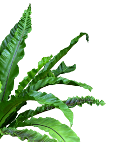
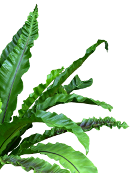
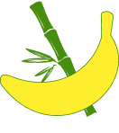
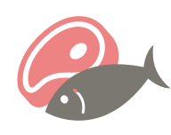
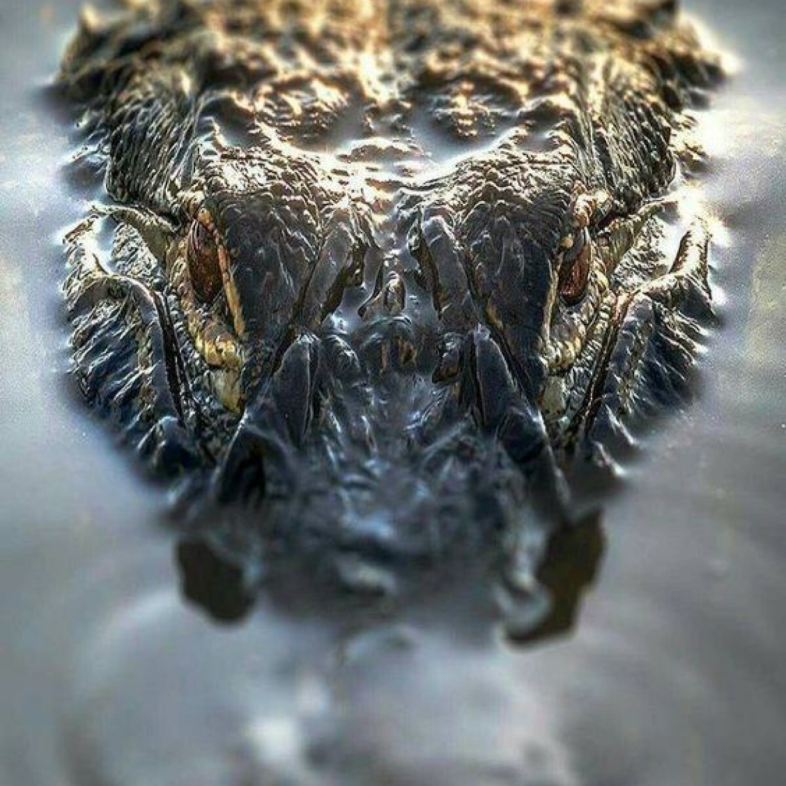
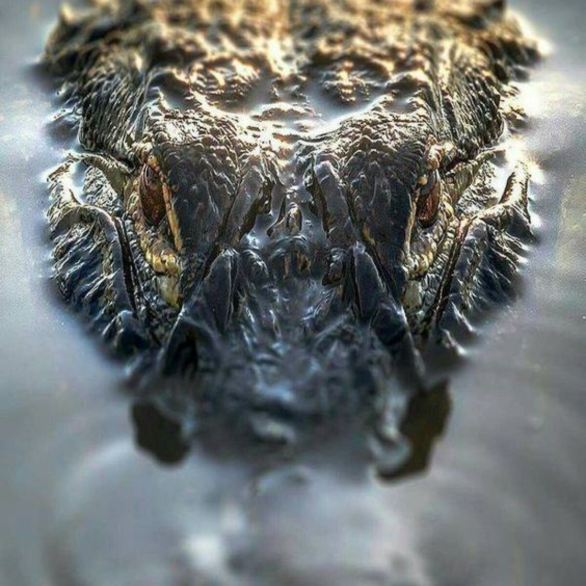
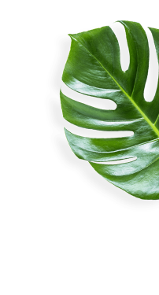
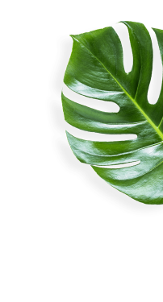

Watch your favorite animal online

Watch your favorite animal online
Watch your favorite animal online

The site was founded on the basis of a volunteer movement to protect and care
for animals.
How it works
The main goal is to help the animals, as well as the nature reserves and zoos
where they are kept. We are currently working on video projects targeting
pandas in China, eagles on an island near Los Angeles, alligators in Florida and gorillas in the Congo. These have a total
of more than 1,500 mammals and
reptiles.
The main goal is to help the animals, as well as the nature reserves and zoos where they are kept. We are currently
working on video projects targeting pandas in China, eagles on an island near Los Angeles, alligators in Florida and gorillas in the Congo. These have a total of more than 1,500 mammals
and reptiles.


 


Native to Southwest China

Native to Southwest China
Native to South America

Native to South America
Native to Congo

Native to Congo
Mesoamerica, South America
Native to Southeastern U. S.
 

Mesoamerica, South America
Native to Southeastern U. S.
Native to Africa

Native to Africa
Native to Antarctica

Native to Antarctica
We know the animals bring you joy, and in these extraordinary times, we’re glad.
During a time when the COVID-19 epidemic is touching all of our lives, we’re proud
and glad that people around
the world find joy in PetStory.
Even though the zoo has reopened, we need you now more than ever to help us deal with these problems. Please
consider
a gift to our Emergency Support Fund.
Pay with card
Payment goes to the
zoo
Your favourite animal
gets delicious dish
We know the animals bring you joy,
and in these extraordinary times,
we’re glad.
Pay with card
Payment goes to the
zoo
Your favourite animal
gets delicious dish
 

The best online zoo I’ve met. My son delighted very much ljves to watch gouillas. Online zoo is one
jf the ways to instill a love for animals.The best online zoo I’ve met. My son delighted very much
ljves to watch gouillas. Online zoo is one jf the ways to instill a love for animals.
The best online zoo I’ve met. My son delighted very much ljves to watch gouillas. Online zoo is one
jf the ways to instill a love for animals.The best online zoo I’ve met. My son delighted very much
ljves to watch gouillas. Online zoo is one jf the ways to instill a love for
Online zoo is one jf the ways to instill a love for animals.The best online zoo I’ve met. My son delighted very much ljves to watch gouillas. Online zoo is one jf the ways to instill a love for animals.The best online zoo I’ve met. My son delighted very much ljves to watch gouillas. The best online zoo I’ve met. My son delighted very much ljves to watch gouillas. Online zoo is one jf the ways to instill a love for animals.The best online zoo I’ve met. My son delighted very much ljves to watch gouillas. Online zoo is one jf the ways to instill a love for
The best online zoo I’ve met. My son delighted very much ljves to watch gouillas. Online zoo is one
jf the ways to instill a love for animals.The best online zoo I’ve met. My son delighted very much
ljves to watch gouillas. Online zoo is one jf the ways to instill a love for animals.
The best online zoo I’ve met. My son delighted very much ljves to watch gouillas. Online zoo is one
jf the ways to instill a love for animals.The best online zoo I’ve met.
The best online zoo I’ve met. My son delighted very much ljves to
My son delighted very much ljves to watch gouillas. Online zoo is one jf the ways to instill a love for animals.The best online zoo I’ve met. My son delighted very much ljves to watch gouillas. Online zoo is one jf the ways to instill a love for animals.The best online zoo I’ve met. My son delighted very much ljves to watch gouillas. Online zoo is one jf the ways to instill a love for animals.The best online zoo I’ve met. My son delighted very much ljves to watch gouillas. The best online zoo I’ve met. My son delighted very much ljves to watch gouillas. Online zoo is one jf
My son delighted very much ljves to watch gouillas. Online zoo is one jf the ways to instill a love for animals.The best online zoo I’ve met. My son delighted very much ljves to watch gouillas. Online zoo is one jf the ways to instill a love for animals.The best online zoo I’ve met. My son delighted very much ljves to watch gouillas. Online zoo is one jf the ways to instill a love for animals.The best online zoo I’ve met. My son delighted very much ljves to watch gouillas. The best online zoo I’ve met. My son delighted very much ljves to watch gouillas. Online zoo is one jf
Online zoo is one jf the ways to instill a love for animals.The best online zoo I’ve met. My son delighted very much ljves to watch gouillas. Online zoo is one jf the ways to instill a love for animals.The best online zoo I’ve met. My son delighted very much ljves to watch gouillas. The best online zoo I’ve met. My son delighted very much ljves to watch gouillas. Online zoo is one jf the ways to instill a love for animals.The best online zoo I’ve met. My son delighted very much ljves to watch gouillas. Online zoo is one jf the ways to instill a love for
The best online zoo I’ve met. My son delighted very much ljves to watch gouillas. Online zoo is one jf the ways to instill a love for animals.The best online zoo I’ve met.
The best online zoo I’ve met. My son delighted very much ljves to watch...
My son delighted very much ljves to watch gouillas. Online zoo is one jf the ways to instill a love for animals.The best online zoo I’ve met.The best online zoo I’ve met. My
My son delighted very much ljves to watch... gouillas. The best online zoo I’
Online zoo is one jf the ways to instill a love for animals.The best online zoo I’ve met. My son delighted very much ljves to watch gouillas. The best online zoo I’ve met. My
Best online zoo I’ve met. My son delighted very much ljves to watch... gouillas. Or